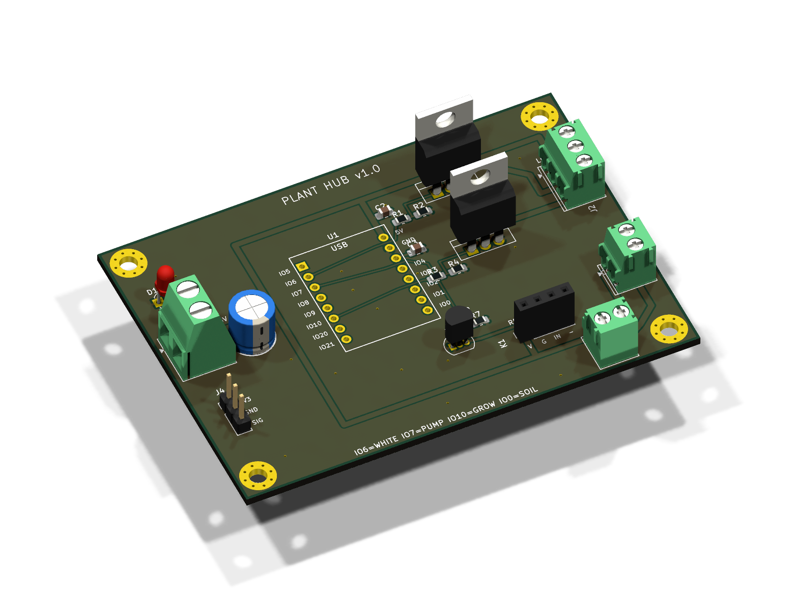
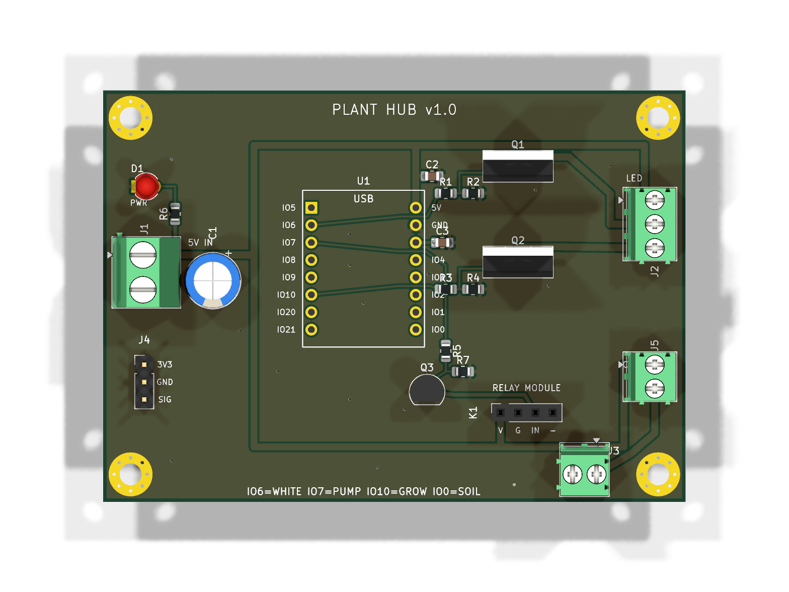

One small board waters a plant and runs its lights. A socketed ESP32-C3 Super Mini switches two independent 5V LED strip channels (white + grow) through logic-level MOSFETs, drives a water pump through a plug-in 5V relay module, and reads an analog soil-moisture sensor on a WiFi-safe ADC pin. Everything lands on screw terminals — no flying wires, no breadboard.
| Board | 85 × 60 mm, 2-layer, ground pour both sides |
| Brain | ESP32-C3 Super Mini (socketed & removable, USB-C reachable in place) |
| Outputs | 2× LED channels (RFP30N06LE MOSFETs), 1× pump via relay module |
| Input | Analog soil-moisture sensor, 3.3V, on ADC1 (works with WiFi on) |
| Power | Single 5V input on a screw terminal |
| Firmware pins | IO6 = white, IO7 = pump (HIGH = on), IO10 = grow, IO0 = soil |
Everything you need to make this board yourself, MIT licensed (license):
plant-hub-v1.0.zip ~94 KB
Upload straight to JLCPCB or PCBWay. 2 layers, 1.6mm, any color you like.
plant-hub-v1.0-BOM.csv ~2 KB
Every part with reference designators and quantities. All hand-solderable.
plant-hub-v1.0-schematic.pdf ~70 KB
The full circuit on one page, with design notes on the sheet.
Complete KiCad 10 project, custom ESP32-C3 socket footprint, the netlist-driven generator scripts, and the assembly guide (README).